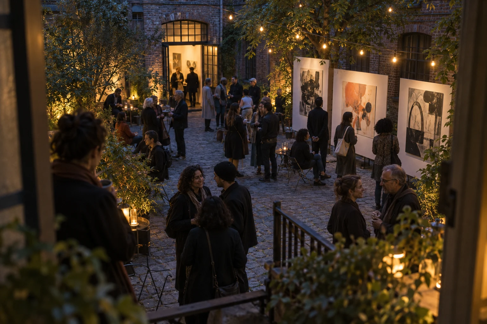
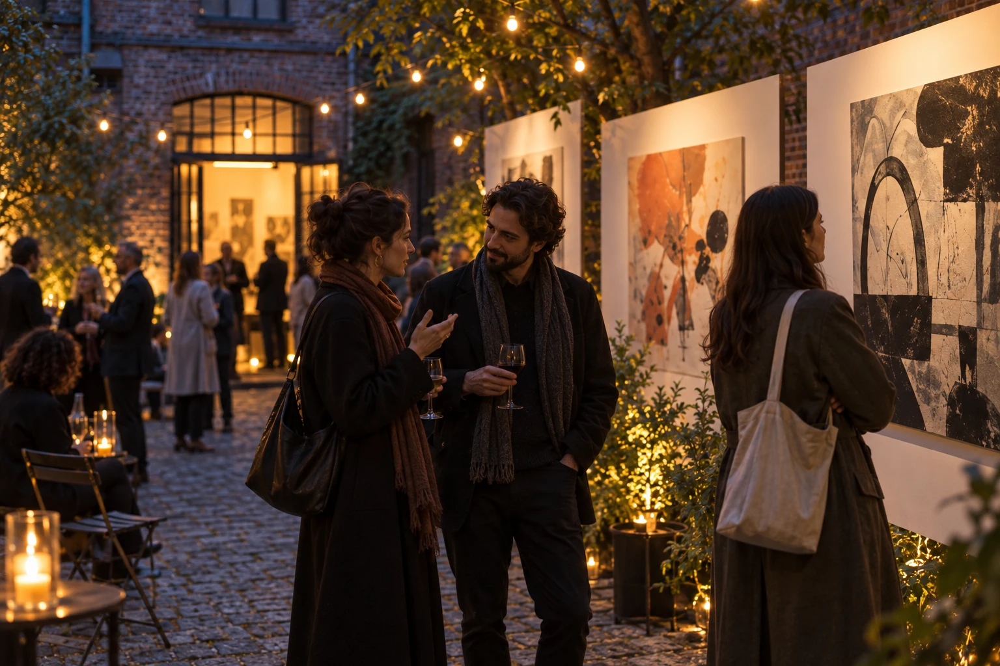

8 SECONDS
Enter the courtyard
Start from the threshold, looking into the gathering place.
Production: Agree the visitor route and avoid blocking arrival.
Cultural event film / concept treatment
PROPOSED LENGTH / 01:00
PROPOSED SHOOT / 1 DAY
STATUS / UNPRODUCED CONCEPT

The intention
Carry the feel of a courtyard exhibition beyond the evening, with attention to the people who make the space their own.
For whom: Visitors and future supporters of a small cultural gathering.
We enter with the first visitors. Small encounters build into a shared space: a conversation, a glance at a print, a pause by the doorway. The film moves back out as the courtyard settles. It is a memory of participation, not a headcount or a claim of success.
An unobtrusive small crew follows the visitor route. Establish the space, then get close to a few human moments. The host agrees what may be filmed and where participation should remain private.
An annotated sequence
Choose a shot to read its direction. Two concept stills illustrate the six proposed beats; this is a storyboard reader, not film or audio playback.
SHOT 01 / 00:00–00:08
Start from the threshold, looking into the gathering place.
PRODUCTION NOTEAgree the visitor route and avoid blocking arrival.
Landscape crop of an illustrative still. Dashed inset is a composition guide, not a delivery specification.
Start from the threshold, looking into the gathering place.
Production: Agree the visitor route and avoid blocking arrival.
Find one small conversation near the prints.
Production: Participant permissions and a clear opt-out route need agreement.
Stay beside a visitor looking at an abstract print.
Production: A real artwork would require an agreed usage basis.
Return to a wider frame as groups find their own corners.
Production: Record a stable wide frame for context and continuity.
A gesture or a shared thought carries the evening’s pace.
Production: Do not invent a spoken testimonial from a silent image.
Look back through the doorway as the sequence closes.
Production: Agree any final title and sponsor usage before delivery.
Proposed direction only: courtyard ambience, footsteps and conversational texture where permission allows. No event recording, speech or music is supplied.
One proposed event shoot day covering setup context, arrivals and the gathering. Event access, participant permissions, weather alternatives and restricted areas need a host-approved plan.
Proposed 60-second event film with two short recaps only if agreed. Captions, logo usage and approval owners would be specified before finishing.
The TXT includes the narrative, timed shot list, proposed scope and the concept-project boundary.
